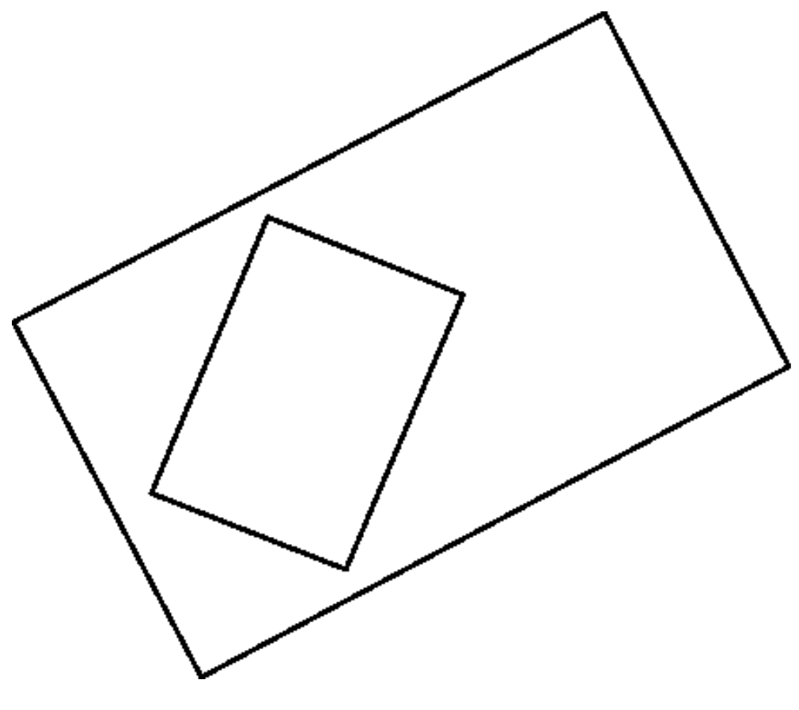
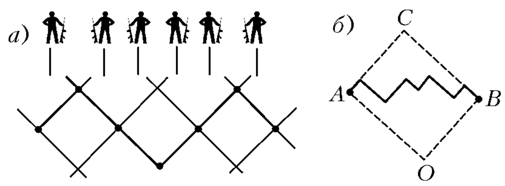
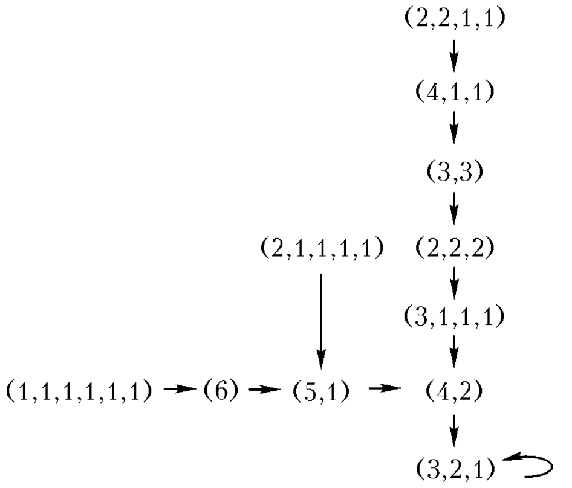
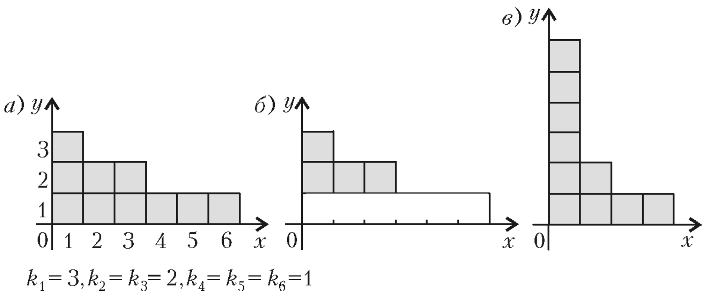
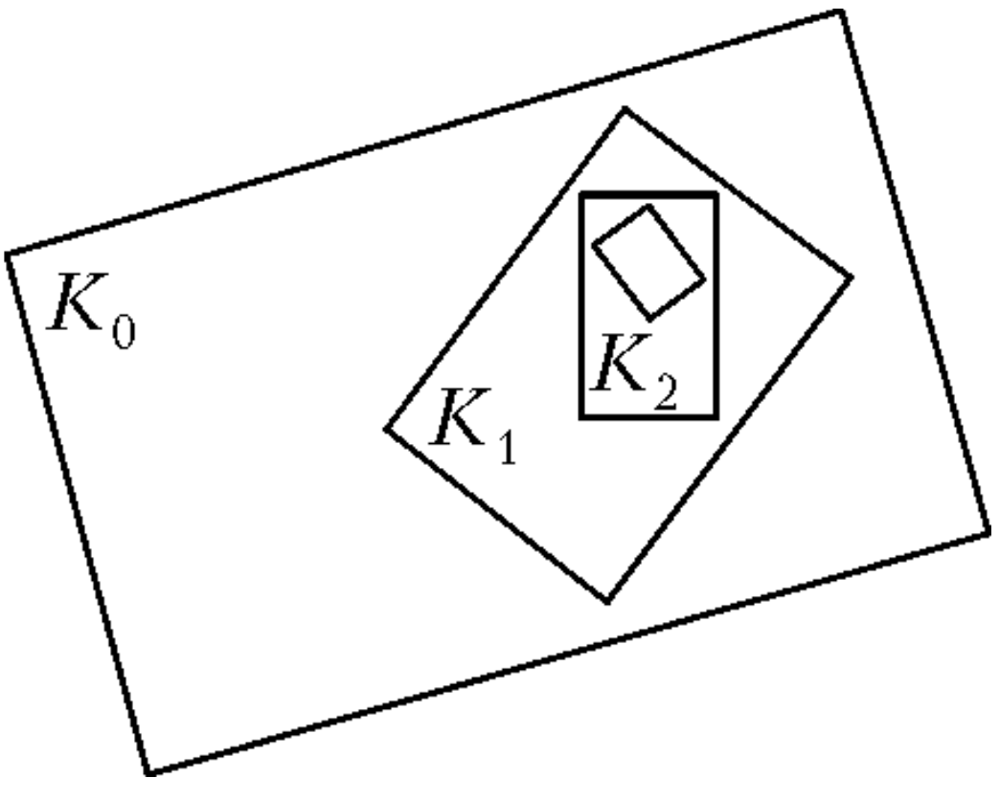
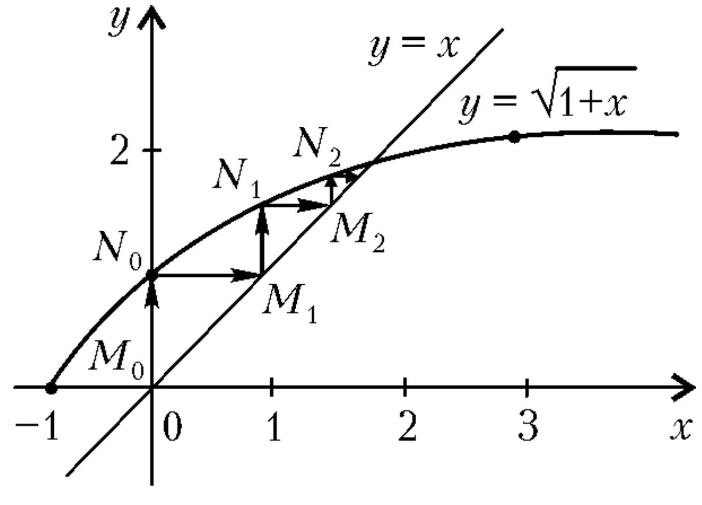
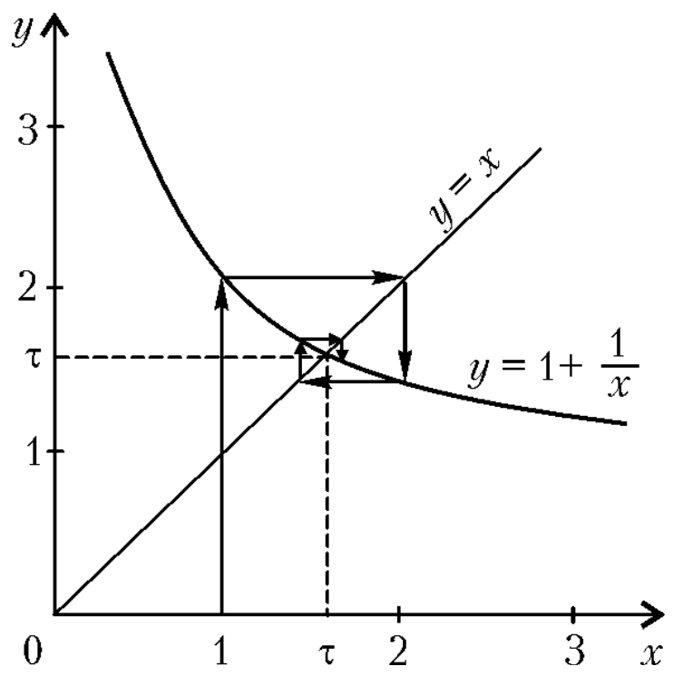
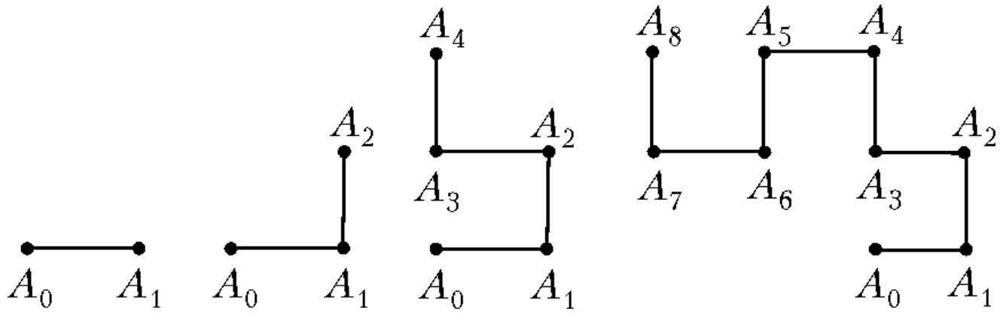

6 SEQUENCES AND ITERATIONS
6-1. a) Find the hundredth digit after the decimal point in the decimal representation of the number 1/7. b) Find a six-digit number that, when multiplied by the numbers 2, 3, 4, 5, 6, gives six-digit numbers that differ from it only in the order of digits.
6-2. A flock of white geese flew over a chain of lakes. On each lake, half of the geese plus half a goose landed, and the rest flew on. All geese landed on seven lakes. How many geese were in the flock?
6-3. The sequence \((a_n)\) is given by the first two terms \(a_1 = 2\), \(a_2 = 3\) and the condition \(a_{k+2} = a_{k+1} a_k\) (k = 1, 2, 3, …). Find \(a_{1986}\).
6-4. Each of the two vessels contains \(A\) liters of water. From the first vessel, half of the water in it is poured into the second, then from the second, a third of the water in it is poured into the first, then from the first, a quarter of the water in it is poured into the second, and so on. How much water will be in each of the vessels after 100 transfers?
6-5. There are two vessels. They contain 1 liter of water in total. Half of the water from the first vessel is poured into the second, then half of the water in the second vessel is poured into the first, then half of the water in the first vessel is poured into the second, and so on. Prove that regardless of how much water was originally in each of the vessels, after 100 transfers they will contain \(\frac{2}{3}\) and \(\frac{1}{3}\) liters, respectively, accurate to 1 milliliter.
6-6. A numerical sequence is being constructed: its first term is \(\frac{1986}{3}\), and each subsequent term, starting from the second, is equal to the sum of the digits of the previous one. Find the tenth term of this sequence.
6-7. Around a clearing, there are 12 houses, painted white and red, in which 12 gnomes have settled. Each gnome has an odd number of friends. In January, the first gnome paints his house the color that the majority of his friends’ houses are painted. In February, the second (clockwise) gnome does the same, in March – the third, and so on. Prove that there will come a moment after which the color of the house of each gnome will stop changing.
6-8. Imagine that on an infinite sheet of checkered paper, several (a finite number) cells “got sick”. Every hour, the following changes occur simultaneously: if a cell is sick, and two cells, to the left and below it, are healthy, then it recovers; if a cell is healthy, and two cells, below and to the left of it, are sick, then it gets sick (the rest of the cells remain as they were). Prove that, no matter how the sick cells were originally located, after some time all cells will be healthy.
6-9. A corporal stands in front of a row of \(N\) soldiers and commands: “Left-RIGHT!” On this command, some soldiers turn left, the rest - right. After that, every second, every two soldiers facing each other turn their backs to each other. Prove that the movement will stop after a finite time, and estimate after how many seconds this will definitely happen.
6-10. On the table of an official of the Ministry of Circumlocution\(^1\) lie \(n\) volumes of the British Encyclopedia, stacked in several piles. Every day, coming to work, the official takes one volume from each pile, forms a new pile from them, arranges the piles by the number of volumes (in descending order), and fills out a statement in which he indicates the number of volumes in each pile. For example, if on the first day the statement says (8, 3, 1, 1), then the next day the record will be (7, 4, 2), then – (6, 3, 3, 1), (5, 4, 2, 2), etc. What will be written in the statement in a month if the total number of volumes \(n\) is: a) 6; b) 10? (The initial division into piles can be arbitrary.)
6-11. How many ten-digit numbers are there, consisting of the digits 2 and 5, such that two twos do not stand next to each other?
6-12. The guys are standing in a circle. They need to choose a leader, and they are counted as follows: the first remains in the circle, the next one clockwise – the second – leaves the circle, the next one – the third – remains, the fourth one leaves, etc., every other one around the circle. The circle is constantly narrowing until only one person remains in it. Determine who exactly will remain (what place he originally stood in, counting from the first clockwise), if there were initially: a) 64 people; b) 1986 people.
6-13. The infinite sequence of zeros and ones 0110100110010110… is compiled according to the following rule. First, zero is written. Then an infinite number of steps are taken. At each step, a new piece of the same length is added to the already written piece of the sequence, obtained from it by replacing all zeros with ones, and ones with zeros. a) Which digit, 0 or 1, is in the 1986th place? b) Will this sequence, starting from some place, be periodic?
6-14. The following game was played at a math party. A spectator from the audience wrote two consecutive natural numbers on two pieces of paper (one on each piece of paper) and rolled them into balls. The presenter gave two mathematicians, A and B, to draw one piece of paper each; each of them looked at what number was written on his piece of paper, but did not tell the other. Then the following meaningful dialogue took place between A and B.
A: I don’t know what your number is. B: And I don’t know what your number is. A: And I don’t know what your number is. B: And I don’t know what your number is. ……………………..
Ten times A said that he did not know what number B had, and ten times B replied that he did not know what number A had. The audience got tired of this, but suddenly, for the eleventh time, A said: “Now I know what your number is.” Then the presenter intervened in the dialogue and asked the audience what numbers A and B could have. What should they answer him?
6-15. On a rectangular map, a map of the same area was placed, but on a smaller scale (Fig. 77). Prove that you can pierce both maps with a needle at once so that the puncture point depicts the same point of the area on both maps.

6-16. Prove that the sequence
1, 1 + 1/2, 1 + 1/2 + 1/3, …, 1 + 1/2 + … + 1/n, …
has a limit, and find it.
6-17. The sequence \((a_n)\) is given by
1, 2/1, 3/2, 5/3, 8/5, …
for each \(n = 1, 2, 3, ...\). Find a number that is less than all members of the sequence with even numbers (\(a_2\), \(a_4\), \(a_6\), …) and at the same time greater than all its members with odd numbers (\(a_1\), \(a_3\), \(a_5\), …).
6.1 Problems Discussion
Problem 6-1. a) Answer: 8.
Let’s start dividing 1 by 7 “by corner” and we will see that the sequence of digits of the quotient after the decimal point will be periodic with a period of 6 digits: (142857). Since 100 = 6 ⋅ 16 + 4, the fourth digit of the period – the digit 8 – will be in the 100th place after the decimal point.
∇ For any natural numbers \(p\) and \(q\), the fraction \(\frac{p}{q}\) is represented either by a finite decimal fraction or by an infinite periodic decimal fraction. Indeed, dividing \(p\) by \(q\) “by corner”, we will get the remainders when dividing some natural numbers by \(q\). The remainder when dividing by \(q\) can be a non-negative integer less than \(q\). Therefore, after no more than \(q\) divisions, either some next remainder will be zero and we will get a finite decimal fraction, or some two remainders will coincide and from this place the quotients will be periodically repeated. This reasoning uses the Dirichlet principle, which was discussed in the discussion of problem 2-9.
- Answer: 142857.
Indeed, multiplying this number by 2, 3, 4, 5, and 6, we get the numbers 285714, 428571, 571428, 714285, and 857142, respectively.
∇ The answer in problem b) is the number made up of the digits of the period of the expansion of the number 1/7 into a decimal fraction. The five numbers written out are, in turn, the periods of the expansion of the numbers 2/7, 3/7, 4/7, 5/7, 6/7 into a decimal fraction. This is easy to verify when dividing the number 1 by 7 by corner: from the second step we divide 3 by 7, starting from the third step – 2 by 7, then – 6, 4, and 5.
Problem 6-2. Answer: 127 geese.
Let one more goose, the Gray Goose, fly with the flock of white geese all the time. If \(m\) white geese and the Gray Goose fly up to a certain lake, then \(\frac{m}{2} + \frac{1}{2} = \frac{m+1}{2}\) – exactly half of all geese – land on this lake. Therefore, after each lake, the number of flying geese is halved. After seven lakes, it decreases by \(2^7 = 128\) times, and one Gray Goose remains flying. This means that there were 128 geese in the beginning, of which 127 were white.
∇ The Gray Goose appeared in the solution of the problem not by chance. Let \(x_k\) denote the number of flying white geese when there are still \(k\) lakes ahead. Then the condition of the problem is written as follows: \(x_{k-1} = \frac{x_k}{2} + \frac{1}{2}\). From here we get a recurrence relation for the sequence \((x_n)\): \(x_k = 2x_{k-1} + 1\).
Adding the Gray Goose, we essentially made a change of variable: \(y_n = x_n + 1\) and got a new sequence \((y_n)\). Substituting \(x_k = y_k - 1\) and \(x_{k-1} = y_{k-1} - 1\) into the relation (*), we see that the sequence \((y_k)\) satisfies a simpler relation: \(y_k = 2 y_{k-1}\). \((y_k)\) is a geometric progression with a common ratio of 2, and, therefore, its general term has the form \(y_n = 2^n y_0\). Returning to the sequence \((x_n)\), we find the formula for its general term: \(x_n = 2^n - 1\).
Now consider a more general case of the sequence \((x_n)\), given by the relation
\(x_k = q x_{k-1} + d\). (**)
If \(q = 1\), then \((x_n)\) is an arithmetic progression and its general term is given by the formula \(x_n = x_0 + d(n-1)\).
If \(q \ne 1\) and \(d = 0\), then \((x_n)\) is a geometric progression and \(x_n = q^n x_0\). If \(q \ne 1\) and \(d \ne 0\), then we are looking for such \(z\) that the sequence \(y_n = x_n + z\) becomes a geometric progression. Substituting \(x_k = y_k - z\) and \(x_{k-1} = y_{k-1} - z\) into the relation (**), we get:
\(y_k = q y_{k-1} + z(1-q) + d\). If we choose \(z\) so that \(z(1-q) + d = 0\), then \(y_k = q y_{k-1}\), whence \(y_n = q^n y_0\). Thus, the formula for the general term is found: \(x_n = q^n (x_0 + z) - z\), where \(z = \frac{d}{1-q}\). In our problem, \(q = 2\), \(x_0 = 0\), \(d = 1\), and \(z = 1\) (one Gray Goose).
Problem 6-3. Answer: \(a_{1986} = \frac{2}{3}\).
Let’s write out the first terms of this sequence:
2, 3, 3/2, 1/2, 1/3, 2/3, 2, 3, …
Since the two adjacent terms \(a_7\) and \(a_8\) are the same as \(a_1\) and \(a_2\), and each subsequent term is calculated from the two previous ones, the sequence will repeat with a period of 6. Since 1986 is divisible by 6, then \(a_{1986} = a_6 = \frac{2}{3}\).
∇ In general, for any non-zero first two terms \(a_1\) and \(a_2\), the sequence from problem 6-2 repeats with a period of 6, i.e., \(a_{n+6} = a_n\). To verify this, it is sufficient to write out the first eight terms of the sequence:
\(a_1, a_2, a_1a_2, 1, a_1, 1/a_2, a_1a_2, 1, a_1, ...\)
It is convenient to denote \(\ln a_n\) by \(x_n\), then the sequence \((x_n)\) will satisfy the condition: \(x_{n+2} = x_{n+1} - x_n\) (for \(n \ge 1\)) and, of course, will also be periodic with a period of 6. A more general fact is true: if
\[d = 2 \cos \frac{k\pi}{m},\]
where \(k\) and \(m\) (\(k < m\)) are coprime natural numbers, then the sequence for which \(x_{n+2} = dx_{n+1} - x_n\) is periodic with a period of \(2m\). For \(k = 1, m = 3\), we get
\[d = 2 \cos \frac{\pi}{3} = 1\]
and the period of the sequence is equal to \(2m = 6\).
Problem 6-4. Answer: The same amount as was initially - \(A\) liters of water in each.
To verify this, we will show that after every two subsequent transfers, the amount of water remains the same. When \(\frac{1}{k}\)-th part of the water from another container is added to a container, it becomes
\[A \left(1 + \frac{1}{k} \right) = A \frac{k+1}{k} \text{ liters.}\]
After this, when \(\frac{1}{k+1}\)-th part is poured out of it, it becomes
\[A \frac{k+1}{k} \left(1 - \frac{1}{k+1} \right) = A \frac{k+1}{k} \cdot \frac{k}{k+1} = A \text{ liters.}\]
Problem 6-5. Note that if the first container had \(\frac{1}{2}\) liters and the second had \(\frac{1}{3}\) liters, then after the first transfer, the volumes would have swapped places, and after the second transfer, they would have become the same as at the beginning.
We will count from such a state. Let after an even number of transfers, the first container has \(\left(\frac{2}{3} + p \right)\) liters, where \(-\frac{1}{6} \le p \le \frac{1}{6}\), then the second container will have \(\left(\frac{1}{3} - p \right)\) liters of water. After the next transfer, these containers will have respectively \(\left(\frac{1}{3} + \frac{p}{2} \right)\) liters and \(\left(\frac{2}{3} - \frac{p}{2} \right)\) liters of water, and then \(\left(\frac{2}{3} + \frac{p}{4} \right)\) liters and \(\left(\frac{1}{3} - \frac{p}{4} \right)\) liters.
So, after every two transfers, the addition \(p\) decreases by a factor of 4. This means that after 100 transfers (50 pairs of transfers), the addition \(p\) will decrease by a factor of \(4^{50}\) and the containers will have: \(\frac{2}{3} + p \cdot \frac{1}{4^{50}}\) and \(\frac{1}{3} - p \cdot \frac{1}{4^{50}}\) liters. Since the addition \(p\) satisfies the inequality \(-\frac{1}{6} \le p \le \frac{1}{6}\), the addition \(p \cdot \frac{1}{4^{50}}\) is less than \(\frac{1}{10000}\) and thus the containers will have, with high accuracy, \(\frac{2}{3}\) liters and \(\frac{1}{3}\) liters.
∇ If you pour not half, but \(\frac{1}{n}\)-th part of the water each time, then after 100 transfers, with high accuracy, the containers will have \(\frac{n}{2n-1}\) and \(\frac{n-1}{2n-1}\) liters of water, respectively.
Let’s show how to find this answer. If the first container has \(x\) liters of water and the second container has \(y\) liters of water, then after the first transfer, the first container will have \(x\left(1-\frac{1}{n}\right) + \frac{y}{n} = x\left(\frac{n-1}{n}\right) + \frac{y}{n}\) liters. For the amount in the first container to be \(x\) again after the second transfer, the following relation must hold: \(y = x\left(\frac{n-1}{n}\right)\). Since \(x+y=1\), we get \(x = \frac{n}{2n-1}\) liters, \(y = \frac{n-1}{2n-1}\) liters.
Problem 6-6. Answer: 9.
If a number is divisible by 9, then the sum of its digits is also divisible by 9. Since \(3^{1986} = 9 \cdot 3^{1984}\), all terms of the given sequence are divisible by 9.
Let’s estimate their values. From the inequality \(3^4 < 10^2\) it follows that \(3^{1986} < 10^{993}\), therefore the number \(3^{1986}\) has no more than 993 digits. This means that the second term of the sequence is no more than \(9 \cdot 993 < 10^4\), i.e., it has no more than four digits. Then the third term of the sequence is no more than \(9 \cdot 4 = 36\), and the fourth is less than 18. Since the fourth term, like the previous ones, is divisible by 9, it is equal to 9. And this means that all subsequent terms are equal to 9.
∇ In general, in a sequence of natural numbers where the \(n\)-th term is the sum of the digits of the \((n-1)\)-th term, all terms, starting from some point, are the same and equal to the remainder \(r\) when the first term is divided by 9 (if \(r \ne 0\)) or 9 (if \(r = 0\)).
Problem 6-7. Consider the number of pairs of gnome friends whose houses are of different colors. Every month, their number does not increase. Indeed, if the next gnome paints the house the same color as it was before, then this number remains the same; if he paints it a different color, then it will decrease. Since this whole number is non-negative, it cannot decrease all the time, which means that starting from some moment it will not change. From this moment on, each gnome will always paint his house the same color.
∇ Note that in the problem statement, the oddness of the number of friends for each gnome is only needed to make it clear what the majority is, and the number of gnomes can be replaced by any other even number. The following technique helped us solve this problem: find a quantity (the number of pairs of friends with different colored houses) that remains the same or decreases under the operation specified in the condition. This technique often helps to understand what happens when an operation is repeated many times on a certain set.
Problem 6-8. Let’s draw a horizontal line through the top side of the topmost sick cell. It is clear that no cell located above this line will get sick. Similarly, no cell to the right of the rightmost initially sick cell will get sick. Thus, all the cells that may get sick lie inside some right angle. Consider the diagonal farthest from the vertex of the angle, perpendicular to the bisector of this angle, on which sick cells still lie. It is clear that all sick cells lying on it will recover in an hour. Thus, each hour the diagonal farthest from the vertex, containing sick cells, “steps” towards the vertex of the angle. Consequently, at some point it will reach the vertex of the angle, inside which sick cells may lie. This means that all cells have recovered.
For experts. Let each cell on the plane be able to be in two states, 0 and 1 (or in one of a finite number N of states), and at each moment of time t = 1, 2, 3, … it takes one of these states, depending on the states of several of its neighbors, according to a certain rule F, the same for all neighbors. Such systems, called cellular automata, have been intensively studied in the last decade by physicists, computer designers, and mathematicians. For some relatively simple rules (such as, for example, the rules of the game “Life” by J. Conway - see [74]), the cellular automaton has a remarkably complex behavior. This applies not only to two-dimensional, but also to one-dimensional (located on the integer line) cellular automata. They are widely studied using computer simulation; even special programs have been built that allow you to observe the behavior of a cellular automaton on a display screen.
Few mathematical results related to cellular automata have been obtained so far. For some problems related to them, their algorithmic undecidability has been proven; for example, for the game “Life” there is no algorithm that allows you to find out from the initial configuration of a finite number of units whether it will turn into an empty configuration “all zeros” after some time.
Problem 6-9. Let’s associate a broken line on graph paper with a row of soldiers, the lines of which go at an angle of 45° to the horizontal line, as shown in Figure 78a: each soldier corresponds to the next segment of the broken line, and if the soldier looks to the right, then the corresponding segment of the broken line goes up, and if to the left, then down. The changes that occur in the row of soldiers in the next second can now be described as follows: the ends A and B of the broken line do not move, and each corner of two adjacent segments sticking up (“hill”) turns into a corner sticking down (“pit”). Thus, the height of the highest “hill” decreases every second, and this will continue until there are no “hills” left in the broken line, i.e., it turns into a broken line AOB from two sides of the rectangle AOBC (see Figure 78b).

The maximum number of seconds during which movement can occur in a row of N soldiers is equal to N – 1: this will be the case if the initial position corresponds to the broken line ACB, and for any other broken line with the same end vertices, the time to complete stop will be less.
∇ If in an infinite row almost all soldiers are turned to the left and only a finite set are looking to the right, then the movement according to the rule specified in the problem will continue indefinitely - a wave that retains its shape moves along the row.
It is interesting that there are rules that are the same for all soldiers, symmetrical with respect to replacing “left” with “right” and require only dependence on three neighbors, which allow you to correct any finite defect in an infinite row. Here is one of them. Let each soldier who sees that the first and third soldiers in front of him (on the side he is looking at) are facing him turn his back to them, then after a finite period of time the movement in any row with a “finite defect” will stop (see [53]).
Problem 6-10. a) Answer: (3, 2, 1).

Figure 79 shows a diagram. It depicts all possible types of entries in the register for n = 6. An arrow leading from one entry to another shows that the second entry will necessarily follow the first one. We see that no later than the seventh day, the entry (3, 2, 1) will be in the register every day.
- Answer: (4, 3, 2, 1).
This answer can be obtained by constructing a diagram similar to the one shown in Figure 79. Those who wish can draw it themselves (it contains 42 entries) and see that no later than the thirteenth day, the entry (4, 3, 2, 1) will be in the register every day.
∇ In principle, a similar diagram can be drawn for any given n, although for large n this requires a lot of time. However, it turns out that, without doing a complete enumeration, it is possible to find out which entries will appear in the register after a sufficiently long time. The general result can be formulated as follows. If the number of volumes n can be written as the sum of consecutive natural numbers, starting from 1, i.e., \(n = 1 + 2 + ... + k = \frac{k(k+1)}{2}\) for some k, then, starting from some day, the entry (k, k-1, k-2, …, 2, 1) will be repeated in the register all the time. (In problem 6-10 a) and b) it was like this: \(6 = \frac{3 \cdot 4}{2}\), \(10 = \frac{4 \cdot 5}{2}\).) If the number n is not represented in the form \(\frac{k(k+1)}{2}\), then the register “loops”: the entries in it begin to repeat with a period of k such that \(\frac{(k-1)k}{2} < n < \frac{k(k+1)}{2}\).
The following construction helps to prove this result and, in addition, to find out what the cycles will be for \(n \ne \frac{k(k+1)}{2}\). Consider the first coordinate quarter with a coordinate grid applied to it. We will depict the entry in the register (k, k, …, k), where \(k_1 \ge k_2 \ge k_3 \ge ... \ge k_l\), as follows. Let’s blacken a column of height \(k_1\) in the figure, next to it - a column of height \(k_2\), then - of height \(k_3\), and so on, up to a column of height \(k_l\) (Fig. 80).

It is convenient to perform the procedure that the official performs on our drawing as follows.
First stage. Cut off the bottom row from the black figure, shift what is left one cell to the right and down, rotate the cut off part by 90° counterclockwise (turn the cut off row into the first column).
Second stage. If the new first column is not the tallest (lower than the second), then cut off and move from right to left those black squares for which there is free space on the left. At the end of the second stage, the columns are arranged in ascending order.
Let’s assume that each black cell has two integer coordinates: the column number and the row number in which it stands.
Main idea. When the first stage is performed, the sum of the coordinates of each black cell does not change, and when the second stage is performed, it decreases for the moved cells. Now consider the sum of both coordinates of all black cells. This sum does not change in the first stage and decreases in the second. From this it follows that the second stage can be repeated only a finite number of times (the sum of the coordinates of the cells is an integer and a positive number, so it cannot decrease indefinitely). This means that, starting from some moment, only the first stage will occur. Consequently, the sum of coordinates will be constant for each cell. From this moment on, each cell (x; y) will move along the cycle (1; q − 1) → (2; q − 2) → … → (q − 1; 1) → (1; q − 1), which we will call the q-diagonal.
Moreover, only the last longest diagonal can be unfilled. In fact, since the second stages no longer occur, the black squares “walk” cyclically along the q-diagonal with a period of q. The periods in the q-th and (q − 1)-th diagonals differ by one. Therefore, it cannot happen that there are empty cells in the (q − 1)-th diagonal, and in the q-th diagonal, sooner or later, it would be to the right of the empty cell and the second stage would have to be carried out.
So, empty spaces can only be on the last diagonal. If \(n = \frac{k(k+1)}{2}\), then all the diagonals are filled; if \(n \ne \frac{k(k+1)}{2}\), then, obviously, there will be cycles.
Stepped figures made up of squares, as well as numerical tables of this form, made up of numbers 1, 2, …, n, help to solve many problems of combinatorics and algebra related to counting the partitions of a natural number into natural terms, the theory of representations of the permutation group, etc. They have a special name - Young diagrams.
The problem is known to mathematicians under the name “Bulgarian Solitaire” or “Bulgarian Patience”. As far as we know, the solution given in the text of our book belongs to A. Toom (1981), then (another) solution was published in 1982. It became more widely known thanks to the famous popularizer of mathematics M. Gardner (see [134]). Comprehensive information on this issue can be found in [135] - [137].
Problem 6-11. Answer: 144 numbers.
Let’s divide all ten-digit numbers that satisfy the condition into two groups. The first group will include those numbers that end in 5, and the second group will include those that end in 2.
By crossing out the last digit 5 for all numbers from the first group, we get all nine-digit numbers in which no two twos are next to each other.
By crossing out the last two digits - 52 - for all numbers from the second group, we get all eight-digit numbers in which no two twos are next to each other.
Let’s denote the number of n-digit numbers consisting of digits 2 and 5, in which no two twos are next to each other, by \(a_n\).
Our reasoning shows that \(a_{10} = a_9 + a_8\).
Note that it is suitable for any \(n \ge 3\), i.e., \(a_n = a_{n-1} + a_{n-2}\).
Since \(a_1 = 2\), \(a_2 = 3\), then according to this formula \(a_3 = 5\), \(a_4 = 8\), \(a_5 = 13\), etc., \(a_{10} = 144\).
∇ The sequence \(a_n\) is simply the Fibonacci sequence \((F_n)\) 1, 1, 2, 3, 5, 8, … numbered from the third term, i.e., \(a_n = F_{n+2}\) - see the discussion of problem 2-4, b).
For recurrent sequences, where the general term is given by a linear function of several previous ones, there is a standard procedure that allows you to find an explicit formula that defines the term of such a sequence as a function of its number. Let’s demonstrate it on the Fibonacci sequence.
We are looking for a geometric progression \(u_k = a\lambda^k\) that satisfies the relation \(u_{n+1} = u_n + u_{n-1}\). We get the equation \(\lambda^2 = \lambda + 1\). We find its roots: \(\lambda_{1,2} = \frac{1 \pm \sqrt{5}}{2}\). Thus, we get two geometric progressions of the form \(b(\frac{1+\sqrt{5}}{2})^n\) and \(c(\frac{1-\sqrt{5}}{2})^n\). For the sequence obtained by their term-by-term addition, the relation \(u_{n+1} = u_n + u_{n-1}\) also holds. Now we find b and c so that the formula
\(u_n = b(\frac{1+\sqrt{5}}{2})^n + c(\frac{1-\sqrt{5}}{2})^n\)
works for the initial terms \(u_1, u_2\).
For the Fibonacci sequence \(u_1 = u_2 = 1\), from which
\(b = \frac{1}{\sqrt{5}}, c = -\frac{1}{\sqrt{5}}\).
For the sequence \((a_n)\) from problem 6-11, we get
\(a_n = F_{n+2} = \frac{1}{\sqrt{5}}[(\frac{1+\sqrt{5}}{2})^{n+2} - (\frac{1-\sqrt{5}}{2})^{n+2}]\).
After 32 people leave the circle, 32 people will remain in it, and the count will start again from the first one.
The same thing will happen again: another 16 people will leave and the count will start again from the first one. Going around the circle a few more times, we are convinced that the first one will remain.
- Answer: 1925th.
As we can see from the solution to part a), if there are \(2^n\) people in the circle, the first one (the one from whom the count starts) will remain until the end. Let there be 1986 people in the circle. We’ll go around the circle, removing every other person, and stop at the moment when 962 people have left the circle. At this moment, there will remain
\(1986 - 962 = 1024 = 2^{10}\) kids, and the first of the remaining ones has the number \(2 \cdot 962 + 1 = 1925\). He will remain in the circle until the end.
∇ For the general problem - when there are N kids in the circle - the number of the remaining one can be elegantly determined using the binary number system: you need to write the number N in binary and move the first digit (one) to the end. The result will be the binary representation of the sought “leader’s” number.
For example: a) \(64_{10} = 1000000_2 \rightarrow 0000001_2 = 1_{10}\); b) \(1986_{10} = 11111000010_2 \rightarrow 11110000101_2 = 1925_{10}\).
It would be interesting to find a solution to a similar general problem when every m-th person leaves the circle (at the end, (m-1) people remain) (see [94], ex. 1.3.2-22 and 5.1.1-2).
Problem 6-13. a) Answer: 0.
For convenience, let’s write: \(\overline{0} = 1\) and \(\overline{1} = 0\).
Let’s denote the (n+1)-th term of the constructed sequence as \(x_n\): \(x_0 = 0\), \(x_1 = 1\), \(x_2 = 1\), … We need to find \(x_{1986}\).
At each step of constructing the sequence, its length doubles. Let’s figure out at which step the term \(x_{1986}\) will appear.
After 10 steps, we’ll get \(2^{10} = 1024\) terms of the sequence, so we need to make 11 steps. On the 11th step, we should append the same terms that were before and replace 0 with 1, and 1 with 0, therefore, \(x_{1986} = \overline{x_{962}}\) (\(1986 - 1024 = 962\)).
Reasoning in the same way, we’ll find that \(x_{962} = x_{450}\) (\(962 - 2^9 = 450\)), and so on. As a result, we get a chain of equalities
\(x_{1986} = \overline{x_{962}} = \overline{x_{450}} = \overline{x_{194}} = \overline{x_{66}} = \overline{x_2} = \overline{x_0} = 0\).
∇ When solving problem 6-13 a), we actually used this property of the given sequence:
1°. \(x_n = \overline{x_{n-2^k}}\), where \(2^k \leq n < 2^{k+1}\).
Another solution to this problem can be obtained based on the following properties of our sequence, which will also be used in solving problem b): for all n
2°. \(x_{2n} = x_n\); 3°. \(x_{2n+1} = \overline{x_{2n}}\).
- Answer: Non-periodic.
To prove this, note that the sequence can be constructed according to a new rule: first, there is a pair (0; 1), then a pair (1; 0) is added to it, then two pairs: (1; 0), (0; 1), and so on: at each step, the same number of new pairs is added to the existing pairs, which are obtained from the old ones by replacing each pair (0; 1) with a pair (1; 0), and (1; 0) with (0; 1).
Now suppose that the given sequence is periodic and \(k\) is the length of its smallest period.
Let first \(k = 2p\) be an even number. Then the periodicity of the sequence means that there exists a natural number \(N\) such that for all \(n \ge N\) the equality \(x_n = x_{n+2p}\) holds. But from the new rule it follows that if we divide our sequence into pairs \((x_0, x_1); (x_2, x_3), ..., (x_{2n}, x_{2n+1}), ...\), then the first terms of all pairs form the sequence \(x_0, x_2, x_4, ..., x_{2n}, ...\), which coincides with the original one (property 2°). From here we get \(x_n = x_{2n} = x_{2n+2p} = x_{2(n+p)} = x_{n+p}\), i.e., the sequence has a period \(p\), which contradicts the fact that \(2p\) is the smallest period.
Now let \(k = 2p + 1\) be an odd number. Then in a piece of the sequence of length \(k\) there is a different number of zeros and ones. Suppose that the number of ones is greater - at least \(p + 1\) (the case when the number of zeros is greater is considered similarly).
Consider a piece of the sequence of length \(2k\). It contains at least \(2p + 2\) ones, and no more than \(2p\) zeros, i.e., there are at least 2 more ones. But from the new rule it follows that \(x_{2n+1} = \overline{x_{2n}}\) (property 3°). Therefore, in any piece of our sequence starting with \(x_{2^m}\), the number of ones differs from the number of zeros by no more than one. This means that the sequence is non-periodic.
∇ This sequence is called the Morse sequence and is often found in various areas of mathematics (see problem 6-18).
Its general term can be defined as follows: if the notation of the number \(n\) in the binary number system contains an even number of ones, then \(x_n = 0\); if it is odd, then \(x_n = 1\).
A similar sequence is obtained from the triple 001, if you do not double, but triple the pieces:
001 001 110 001 001 110 110 110 001…
This sequence is called the “waltz of infinite order”, and, glancing over it, you can, as it were, hear the melody of the waltz.
Interest in such sequences is associated, in particular, with Kolmogorov’s complexity theory. Both given sequences, being by no means random, have some properties required from tables of random numbers. Thus, the proportion of ones among the first \(k\) terms of each of these two sequences tends to one-half as \(k \rightarrow \infty\) (see [138]).
The considered sequence was first constructed in 1851 by Prouhet (P. Prouhet), who applied it in number theory, but limited himself to these applications, without touching on many interesting, unique properties of this sequence.
In 1906, Axel Thue, who was engaged in combinatorics, rediscovered this sequence, but his work did not receive wide response and recognition.
In 1921, Marston Morse, who was engaged in differential geometry, rediscovered this sequence again.
Since then, it has been rediscovered independently many times. Interestingly, the world chess champion grandmaster Max Euwe discovered its application in chess. He showed how to play endlessly without breaking the rules of a draw. However, there are some subtleties associated with chess rules (see the book [140]).
The Morse-Thue sequence is the simplest example of a fractal. Therefore, it has a number of symmetries, in particular, it does not change when all elements in even places are removed.
Among its other properties, we note that it does not contain three identical pieces in a row, i.e., it is impossible to meet the fragment AAA in it, where A is any finite sequence of zeros and ones.
There is a number \(\tau\), the binary notation of which is the Morse-Thue sequence, it is called the Prouhet-Thue-Morse number;
\[\tau = \sum_{i=0}^{\infty} \frac{t_i}{2^{i+1}} = 0.412454033640...,\]
where \(t_i\) are the elements of the Morse-Thue sequence. As K. Mahler proved in 1929, this number is transcendental, i.e., it is not a root of any polynomial with integer coefficients.
Generalizations of the Morse-Thue sequence are also considered both to an arbitrary alphabet (i.e., instead of zeros and ones, one can consider n arbitrary symbols) and to the multidimensional case (for example, a two-dimensional sequence is a matrix obtained from the previous transformation \(\begin{pmatrix} 1 & 0 \\ 0 & 1 \end{pmatrix} \rightarrow \begin{pmatrix} 1 & 0 & 0 & 1 \\ 0 & 1 & 1 & 0 \end{pmatrix}\), see [139]).
Problem 6-14. Answer: Either A had the number 20 and B had the number 21, or A had the number 21 and B had the number 22.
The following table explains what conclusions an intelligent viewer (for example, you and I) can draw, and what A and B drew based on each replica (replicas are given in abbreviated form).
| Replica No. | Replica | Conclusion from the replica | Our comment |
|---|---|---|---|
| 1a | A: “I don’t know what you have.” | A doesn’t have the number 1. | Otherwise, A would know that B has the number 2. |
| 1b | B: “I don’t know what you have.” | B doesn’t have 1 or 2. | If B had 1, then he would know that A has the number 2, and if B had 2, then, taking into account the information from the previous replica, B would know that A has the number 3. |
| 2a | A: “I don’t know what you have.” | A doesn’t have 1, 2, or 3. | Otherwise, A would know, taking into account the previous conclusions, that B has either 3 or 4, respectively. |
| 2b | B: “I don’t know what you have.” | B doesn’t have 1, 2, 3, or 4. | |
| … | … | … | … |
| 10a | A: “I don’t know what you have.” | A doesn’t have 1, 2, 3, …, 19. | |
| 10b | B: “I don’t know what you have.” | B doesn’t have 1, 2, 3, …, 20. | |
| 11a | A: “I don’t know what you have.” | Either A has the number 20, then B has the number 21, or A has the number 21, then B has the number 22. |
∇ In solving this problem, we used considerations like “A thinks that B thinks that…”. Such multiple reflections of reality in the minds of people (similar to multiple reflections in mirrors) have recently attracted the attention of scientists and are discussed under the name “reflexive reflections” (the Latin word reflexus means “reflected”)2.
Among the mathematical problems involving reflexive reasoning, let’s name a series of problems “about wise men with dirty foreheads” (see, for example, [55]).
Problem 6-15. Consider the mapping \(f\) that maps the large map \(K_0\) to the smaller map \(K_1\); each point representing a certain point on the map \(K_0\) ( \(K_0 \supset K_1\) ) is mapped to the point representing the same point on the map \(K_1\). Let’s denote by \(K_2\) the image of the map \(K_1\) under the same mapping (Fig. 81) \(f(K_{n-1}) = K_n\), \(n = 1, 2, ...\). The rectangles \(K_0\), \(K_1\), \(K_2\), …, \(K_n\), … have exactly one common point \(x\), since the sizes of the rectangles tend to zero.

The point \(x\) is the desired puncture point. Indeed, the fact that \(x \in K_{n-1}\) implies that \(f(x) \in K_n\) (for any \(n\)). Thus, the point \(f(x)\) also belongs to all rectangles, and there is only one such point, so \(x = f(x)\).
∇ In general, the following theorem is true: any continuous mapping of a rectangle into itself has a fixed point. So the statement of problem 6-15 will remain true even if one map is crumpled and placed on another map (see [30, 44, 98]).
Another approach is possible to our problem (when the map is not crumpled). You can imagine a smaller map as obtained from a larger one using a geometric transformation of the composition of homothety and rotation. If the plane on which the maps lie is represented as a complex plane, then such a transformation is represented by a linear function \(w(z) = qz + b\), where \(q\), \(b\), \(z\) are complex numbers and \(q \ne 0, 1\).
Then the fixed point \(z_0\) is found as a solution to the equation \(z = qz + b\), i.e., \(z_0 = \frac{b}{1-q}\).
Problem 6-16. Answer: The limit is equal to \(\frac{1 + \sqrt{5}}{2}\).
The given sequence \((a_n)\) is defined by the conditions \(a_1 = 1\), \(a_{n+1} = 1 + \frac{1}{a_n}\).
First, let’s assume that it has a limit \(\tau\). Since \(\lim a_n = \lim a_{n+1} = \tau\), we pass to the limit in the equality \(a_{n+1} = 1 + \frac{1}{a_n}\) and get \(\tau = 1 + \frac{1}{\tau}\). Squaring both sides of the resulting equality, we arrive at the quadratic equation \(\tau^2 - \tau - 1 = 0\) with the condition that \(\tau > 0\). The roots of this equation will be the numbers \(\frac{1 + \sqrt{5}}{2}\) and \(\frac{1 - \sqrt{5}}{2}\), and, consequently, \(\tau = \frac{1 + \sqrt{5}}{2}\).
Now let’s prove that the sequence \((a_n)\) is monotonically increasing and all its terms are no greater than the number \(\tau\); from this, according to the Weierstrass theorem, it will follow that it has a limit. We will carry out the proof by induction.
Base of induction: \(a_1 < a_2 < \tau\), i.e. \(1 < 1 + \frac{1}{1} < \frac{1 + \sqrt{5}}{2}\). Here, both inequalities can be checked by term-by-term squaring.
Now let’s do the induction step: suppose that \(a_{k-1} < a_k < \tau\), and prove that \(a_k < a_{k+1} < \tau\).
The inequality \(a_k < a_{k+1}\) is equivalent to the inequality \(1 + \frac{1}{a_{k-1}} < 1 + \frac{1}{a_k}\). The last inequality is true, since according to the induction hypothesis \(a_{k-1} < a_k\).
The inequality \(a_{k+1} < \tau\), or \(1 + \frac{1}{a_k} < \tau\), is equivalent to the inequality \(a_k < \tau^2 - 1\). Since \(\tau^2 - \tau - 1 = 0\), then \(\tau^2 - 1 = \tau\) and, consequently, \(a_k < \tau\).
The proof by induction is completed.
∇ Note that we denoted the limit by the Greek letter \(\tau\) (tau), since it is customary to denote the remarkable number \(\frac{\sqrt{5} + 1}{2}\) in this way (see problem 3-14).
If we consider the function \(f(x) = 1 + \frac{1}{x}\), then the sequence from problem 6-16 can be thought of as the sequence \(f(0)\), \(f(f(0))\), \(f(f(f(0)))\), …
The behavior of sequences of the form \(x_0\), \(f(x_0)\), \(f(f(x_0))\), \(f(f(f(x_0)))\), … is conveniently studied graphically. The graph of the function \(y = f(x)\) and the line \(y = x\) are drawn in one coordinate system. Then our sequence corresponds to the geometric procedure shown in Figure 82.

From the point \(M_0 = (x_0, 0)\) on the \(Ox\) axis, we draw a vertical line until it intersects the graph of the function \(y = f(x)\). The intersection point has coordinates \(N_0 = (x_0, f(x_0))\). From this point we draw a horizontal line until it intersects the line \(y = x\) at the point \(M_1 = (f(x_0), f(x_0))\). From this point, we again draw a vertical line until it intersects the graph of the function \(y = f(x)\) at the point \(N_1 = (f(x_0), f(f(x_0)))\), and so on. The abscissas of the points \(N_0, N_1, ...\) (or the ordinates of the points \(M_0, M_1, ...\)) are the terms of our sequence.
Figure 82 shows the graph of the function \(f(x) = 1 + \frac{1}{x}\) from problem 6-16. We see that the terms of the sequence grow and tend to the number \(\tau\), where \(\tau\) is the abscissa of the intersection point of the graph of the function \(f(x) = 1 + \frac{1}{x}\) with the line \(y = x\).
By calculating one after another the terms of this sequence using the formula \(x_{n+1} = 1 + \frac{1}{x_n}\), starting with \(x_0 = 0\), we thereby find with ever greater accuracy the root \(\tau\) of the equation \(x^2 - x - 1 = 0\). This observation explains the following technique for the approximate solution of equations. The equation \(F(x) = 0\) is rewritten in the form \(x = f(x)\). A number \(x_0\) is chosen and the terms of the sequence \(x_n\) are found one after another using the formula \(x_{n+1} = f(x_n)\) for \(n \ge 1\). This method of finding the roots of an equation is called the iteration method or the method of successive approximations (see [44, 64]).
Problem 6-17. Answer: \(\frac{\sqrt{5} + 1}{2}\).
Note that all terms \(a_k\) of the sequence are positive and that the number \(\tau = \frac{\sqrt{5} + 1}{2}\) is the root of the equation \(\frac{1}{\tau} = 1 + \frac{1}{\tau}\). Let’s show that if \(a_k < \tau\), then \(a_{k+1} > \tau\) and \(a_{k+2} < \tau\).
The inequality \(a_k < \tau\) implies the following relations:
\[\frac{1}{a_k} > \frac{1}{\tau}, \quad a_{k+1} = 1 + \frac{1}{a_k} > 1 + \frac{1}{\tau} = \tau,\]
\[\frac{1}{a_{k+1}} < \frac{1}{\tau}, \quad a_{k+2} = 1 + \frac{1}{a_{k+1}} < 1 + \frac{1}{\tau} = \tau.\]
∇ Consider the function \(f(x) = 1 + \frac{1}{x}\). The sequence from problem 6-17 is the sequence \(f(1), f(f(1)), ...\). The behavior of this sequence can be represented graphically in the same way as in the previous problem (Fig. 83).

For experts. Experts, of course, noticed that the sequence considered in problem 6-17 can be defined as follows: \(a_n = \frac{F_{n+1}}{F_n}\), where \(F_k\) is the k-th term of the Fibonacci sequence (see the discussion of problem 6-11), i.e., \(a_n\) are suitable fractions of the expansion of the number \(\tau\) into an infinite continued fraction (see [63]).
Problem 6-18. Answer: (0; 2), (2; 0), (\(-1 + \sqrt{5}; -1 + \sqrt{5}\)), (\(-1 - \sqrt{5}; -1 - \sqrt{5}\)).
Substituting \(y = (4 - x^2)^2\) from the first equation into the second, we get a fourth-degree equation
\[2 - x^2 = (4 - (2 - x^2)^2)^2,\]
whence \(x^4 - 4x^2 + 2x = 0\), or \(x(x - 2)(x^2 + 2x - 4) = 0\). Solving this equation, we find the answer.
∇ Consider a more general system of equations of the form
\[y = f(x), \quad x = f(y)\]
(in problem 6-18 \(f(x)=(4-x^2)^2\)).
Substituting \(y\) from the first equation into the second, we reduce the problem to solving the equation \(x = f(f(x))\).
It is clear that if \(x\) is a fixed point of the mapping \(f\), i.e., \(f(x) = x\), then \(f(f(x)) = f(x) = x\). Therefore, among the roots of the equation \(x = f(f(x))\) will be all the roots of the equation \(f(x) = x\). In problem 6-18, the equation \(x = f(x)\) has the form \(x = (4 - x^2)^2\) and its roots \(x = -1 \pm \sqrt{5}\) give two solutions to the original system.
Its two other solutions, \(x = 0\), \(x = 2\), form a “cycle” of period 2.
For experts. Consider a more general system:
\[x_2^2 = a - x_1^2,\] \[x_3^2 = a - x_2^2,\] \[...\] \[x_p^2 = a - x_{p-1}^2.\] (*)
Let’s denote the mapping \(x \rightarrow (a - x^2)^2\) by \(f\), and the n-fold iteration of this mapping by \(f^n\).
We will call the sequence
\[x_0, f(x_0), f(f(x_0)), ..., f^n(x_0), ...\]
the orbit of the point \(x_0\) under the mapping \(f\).
The orbit of a point \(x_0\) is called periodic (of period \(p\)) if \(f^p(x_0) = x_0\) and \(f^k(x_0) \ne x_0\) for \(1 \le k < p\).
Our system (*) reduces to the algebraic equation \(f^p(x) = x\) of degree \(2^p\). The question of whether this system has a solution \((x_1, x_2, ..., x_p)\) with \(p\) different numbers (for given values of the parameter \(a\)) can be formulated as follows: does the mapping \(f\) have an orbit of period \(p\)? This question, and in general the study of iterations of continuous functions, has recently been devoted to a number of serious mathematical works.
For example, in the family of mappings \(f_a(x) = (a - x^2)^2\) (\(0 \le a \le 8\)), one can trace many interesting phenomena that arise during iterations of mappings of a segment into itself, in particular, the behavior of orbits of different points.
It is not difficult to see that for \(0 \le a \le 8\) our mapping \(f\) maps the segment \(\left[-1 - \sqrt{1+a}; -1 + \sqrt{1+a}\right]\) into itself and has two “orbits of period 1” (i.e., two fixed points: \(x = -1 \pm \sqrt{1+a}\)). For \(0 \le a \le 3\), the mapping \(f\) has no other periodic orbits. It can be proved that with increasing \(a\), orbits with other periods begin to appear: for \(a > a_1 = 3\) - with period 2, for \(a > a_2 = 5\) - with period 4, for \(a > a_3 = 5.47...\) - with period 8, and so on. In general, there is an increasing sequence of numbers \(a_m\) such that for \(a_m < a \le a_{m+1}\) the mapping has orbits of each of the periods 1, 2, \(2^2\), …, \(2^m\) and has no orbits with other periods. This sequence converges to the critical value \(a_\infty = 5.6046 ...\) (found using a computer), after which the nature of typical orbits changes dramatically. In this case, the sequence of differences \(a_m - a_\infty\) behaves approximately like a geometric progression with denominator \(\lambda = \frac{1}{(4.66920...)^{m-1}}\). (Exactly the same for many other families of continuous mappings, there are sequences of parameter values \(a_m\) at which “period doublings” occur, converging to critical values \(a_\infty\), and always the difference \(a_m - a_\infty\) tends to zero as a progression \(b = c\lambda^m\), i.e., the ratio \((a_m - a_{m-1})/(a_{m+1} - a_m)\) always tends to the same limit \(\lambda\) - Feigenbaum’s constant.)
For \(a < a_\infty\), the behavior of the orbit of almost any point \(x\) is relatively simple: if \(a_m < a \le a_{m+1}\), then it approaches some orbit of period \(2^m\). In other words, for \(p = 2^m\) and \(a \le a_{m+1}\), one solution of our system of equations (*) can be found by the method of successive approximations.
For example, for the function \(f_4(x) = (4 - x^2)^2\) from problem 6-18, it is easy to verify that the orbit of any point \(x \in [-2; 2]\) approaches the orbit of zero (0; 2; 0; 2; …) of period 2.
For \(a > a_\infty\), the picture becomes dramatically more complicated: the orbits of many points \(x\) wander chaotically over some infinite subset of the segment. For example, for \(a = a_\infty\), the orbit of zero does not approach any periodic orbit; moreover, even the sequence \((\theta_n)\) of signs of these numbers is non-periodic and has a complex structure (see table).
| n | 1 | 2 | 3 | 4 | 5 | 6 | |
|---|---|---|---|---|---|---|---|
| \(f^n(0)\) | 2.80… | -1.12… | 2.17… | 0.44… | 2.70… | -0.84… | |
| \(\theta_n\) | + | - | + | + | + | - |
It is interesting to note that this sequence of pluses and minuses \(\theta_n\) is closely related to the Morse sequence from problem 6-13. It turns out that if you write a “+” sign under each pair of adjacent members of the Morse sequence if these members are different, and a “-” sign if they are the same, then you get exactly the sequence \(\theta_n\):
0 1 1 0 1 0 0 1 1 0 0 1 0 1...
+ - + + + - + - + - + + + ...For \(a > a_\infty\), the mapping \(f_a\) has periodic orbits not only of period \(2^p\). The following Sharkovsky’s theorem (see [78]) shows what periods, in principle, the orbits of this mapping can have.
All natural numbers are ordered in this way:
3, 5, 7, ...; 3 * 2, 5 * 2, 7 * 2, ...; 3 * 2^2, 5 * 2^2, 7 * 2^2, ...; 2^3, 2^2, 2, 1
odd odd x 2 odd x 4 powers of 2Then, for any two natural numbers, we can say which of them is to the left and which is to the right. If a continuous mapping of a segment into itself has an orbit of period \(r\), then it also has orbits of all periods to the right of \(r\).
For example, the number 3 is to the left of all, and, accordingly, a mapping that has an orbit of period 3 also has orbits of all periods. There are other results on how the properties of iterations of families of continuous mappings of a segment into itself can change depending on the parameter. But many observations obtained using a computer are still waiting for their explanation.
Interest in this topic is explained by the fact that it is closely related to the study of complex, chaotic (random), i.e. unstable and non-periodic behavior of dynamical systems with three or more variables, modeling a variety of physical processes (see [111, 113]).
6.2 Independent Practice Problems
6-19. a) Find the 1986th digit after the decimal point in the decimal notation of the number 1/31. b) For what natural numbers \(m < 31\) will the period of the decimal notation of the number \(m/31\) consist of the same digits as the period of the number \(1/31\)?
6-20. a) The teacher asks the student to divide 19 by 73 using long division. What digit will be in the 100th place after the decimal point? b) Let \(n\) be an integer, \(0 < n < 73\). The number \(n/73\) is expanded into an infinite decimal fraction. Prove that this fraction does not contain two identical digits in a row. c) Specify all prime numbers \(p\) for which the decimal expansions of all fractions \(n/p\) (\(0 < n < p\)) do not have two identical digits in a row.
6-21. The sequence \((a_n)\) is given as follows: \(a_1 = 7\), \(a_{n+1}\) is the sum of the digits of the number \(a_n^2\). Find \(a_{1000}\).
6-22. The sequence \((a_n)\) is given as follows: \(a_1\) is some natural number, \(a_{n+1}\) is the sum of the squares of the digits of the number \(a_n\), \(n \ge 1\). Prove that one of the numbers 1 or 89 will necessarily occur in this sequence.
6-23. The sequence \((x_n)\) is given by its first two terms \(x_1 \ne 0\), \(x_2 \ne 0\) and the condition
\[x_{n+1} = kx_n - x_{n-1}.\]
Does this sequence have a period if:
- \(k = \frac{3}{2}\); b) \(k = \sqrt{3}\); c) \(k = \frac{\sqrt{5}+1}{2}\); d) \(k = \pi\)?
6-24. A stream of students took the same test five times (those who failed the test came the next day). Every day, a third of all the students who came successfully passed the test, and another third of a student. What is the smallest possible number of students who did not pass the test in five times?
6-25. The inhabitants of the islands of Chung and Chang exchange valuables once a year for a holiday. The inhabitants of Chung bring half of their valuables to the island of Chang, and the inhabitants of Chang simultaneously bring a third of their valuables to the island of Chung. This has been going on since time immemorial. What proportion of valuables is on each of the islands? (No new valuables have appeared on the islands during this time, and the old ones have not been lost.)
6-26. Solve the system
\[x_2^2 = 1 - x_1^2,\] \[x_3^2 = 1 - x_2^2,\] \[...\] \[x_n^2 = 1 - x_{n-1}^2,\] \[x_1^2 = 1 - x_n^2.\]
6-27. Find the hundredth term \(x_{100}\) of the sequence \((x_n)\) given by the conditions:
- \(x_1 \in [0; 1]\), \(x_{n+1} = x_n(1 - x_n)\), \(n > 1\);
- \(x_1 \in [0.1; 0.9]\), \(x_{n+1} = 2x_n(1 - x_n)\), \(n > 1\).
6-28. The sequence of polynomials \(P_n(x)\) is given by the condition
\[P_0(x) = 1, \quad P_1(x) = x, \quad P_2(x) = x^2 - 1, ...\] \[P_{n+1}(x) = xP_n(x) - P_{n-1}(x).\]
Prove that the equation \(P_{100}(x) = 0\) has 100 different real roots.
6-29. An ant crawled along a broken line \(H_0H_1H_2H_3...\) of an infinite number of links \(H_0H_1\), \(H_1H_2\), \(H_2H_3\), … The lengths of the segments \(H_0H_1\), \(H_1H_2\), and \(H_0H_2\) are 5, 4, and 3 cm, respectively; \(H_nH_{n+1}\) is the perpendicular dropped from the point \(H_n\) to the segment \(H_{n-2}H_{n-1}\) (\(n = 2, 3, 4, ...\)).
- What distance did the ant crawl?
- At what distances from the segments \(H_0H_2\) and \(H_0H_1\) is the point to which it crawled?
6-30. In a sequence of triangles, the side lengths of each subsequent triangle \(A_nB_nC_n\) are equal to the lengths of the medians of the previous triangle \(A_{n-1}B_{n-1}C_{n-1}\). Find the side lengths of triangle \(A_{1000}B_{1000}C_{1000}\), if a, b, c are the side lengths of triangle \(A_0B_0C_0\).
6-31. A square is inscribed in a circle of radius 1, then a circle is inscribed in the square, then a regular octagon is inscribed in this circle, then a circle is inscribed in the octagon, then a regular 16-gon is inscribed in this circle, and so on; a regular \(2^{n+1}\)-gon is inscribed in the n-th circle. Prove that the radii of all circles are greater than \(\frac{2}{\pi}\).
6-32. The sequence \((a_n)\) is defined by the first term \(a_1 = 1\) and the condition \(a_{n+1} = a_n + \frac{n^2}{n+1}\). Prove that: a) this sequence is unbounded; b) \(a_{9000} > 30\) c) Find the limit \(\lim_{n\to\infty} \frac{a_n}{n^3}\)
6-33. The sequence \((a_n)\) is defined by the first term \(a_1 = 1\) and the condition \(a_{n+1} = \frac{3a_n+1}{4a_n}\). Prove that: a) the sequence is bounded; b) \(|a_{1000} - 2| < (\frac{3}{4})^{1000}\)
6-34. Find the limit of the sequence \((a_n)\), which is defined by the conditions: \(a_1 = 2\), \(a_{n+1} = \frac{a_n^2}{2a_n-1}\)
6-35. From a triple of numbers a, b, c, we form a new triple a-b, b-c, c-a, then from this triple by the same rule - the next one, and so on. Will 0 always appear among the numbers obtained in this way if the numbers a, b, c are: a) integers; b) not necessarily integers? c) The same questions for a similar operation on quadruples of numbers: \((a, b, c, d) \to (a - b, b - c, c - d, d - a)\)
6-36. The population of a city consists of n people, and each lives in a separate house. One day, the city residents decided to exchange their houses. After the exchange, it turned out that the distance between the new houses of any two residents is not less than the distance between their old houses. Prove that as a result of the exchange, the distances between the houses of any two city residents did not change.
6-37. All numbers divisible by nine are written out in order: 9, 18, 27, 36, 45, 54, 63, 72, 81, 90, 99, 108, 117, … and for each of these numbers, the sum of its digits is found: 9, 9, 9, 9, 9, 9, 9, 9, 9, 9, 18, 9, 9, … (*)
It is required to specify the law describing the alternation of numbers in the sequence (*). At what position in this sequence will the number 81 first appear, and what will be the number following it? What will occur earlier in this sequence - the number 27 four times in a row or the number 36 three times in a row?
6-38. The segment of the number line from 0 to 1 is painted green. Then its middle third - the segment \([\frac{1}{3}, \frac{2}{3}]\) - is repainted red; then the middle third of each of the remaining green segments is also repainted red, the same operation is performed with the remaining four green segments, and so on to infinity.
- Find the sum of the lengths of the red segments.
- Prove that the number 1/4 will remain green until the very end.
- From the sum \(\frac{2}{3} + \frac{2}{9} + \frac{2}{27} + \frac{2}{81} + ...\), an infinite number of terms are arbitrarily crossed out so that an infinite number of terms also remain; prove that their sum is a green number.
- Prove that all other numbers (between 0 and 1) are red.
6-39. Let’s call the Dragon curve an infinite sequence of segments \(A_0A_1\), \(A_1A_2\), \(A_2A_3\), … (on a plane), which is constructed according to the following rule. First, points \(A_0\) and \(A_1\) are chosen, different from each other. Then, step by step, the following points are constructed. At the k-th step, where k = 1, 2, …, the already constructed broken line \(A_0A_1...A_{2^{k-1}}\) is rotated around its last point \(A_{2^{k-1}}\) clockwise by 90°. During this rotation, \(A_0\) moves to \(A_{2^k}\), \(A_1\) moves to \(A_{2^k-1}\), in general \(A_m\) moves to \(A_{2^k-m}\) for all \(m \in {0,1,...,2^{k-1}-1}\). This produces the broken line \(A_0A_1...A_{2^k}\), and then the next step is made (Fig.84).

- Construct the broken line \(A_0A_1...A_{32}\).
- Find the general formula for the sequence of distances \(A_0A_1\), \(A_0A_2\), \(A_0A_4\), …, \(A_0A_{2^k}\), …
- Prove that the Dragon curve does not pass twice along any segment.
- It is convenient to draw the Dragon curve on graph paper (each link is a side of a cell). Prove that four infinite Dragon curves starting from one node of the graph paper in four different directions pass through all segments of an infinite sheet of graph paper.
6-40. Gnomes living in white and red houses paint their houses simultaneously every year, and only those gnomes change the color of their house who have more than half of their friends living in houses of a different color in the past year. Prove that a year will come, starting from which the color of some houses will not change at all, while the rest will change every year.
6.3 Hints for Independent Practice Problems
2-23. You need to determine if the equation \(13x + 16y = 300\) has a solution in non-negative integers (see 2-1, 2-6, p. 17, 21).
2-24. The ratio of the lengths of the circumferences is \(40/18 = 20/9\). Therefore, the nail will leave marks every \(9/20\) of the length of the larger circumference (see 2-8, p. 22).
2-25. See 2-7, 2-8, p. 21–23.
2-26. Since gcd(360, 48) = 24, question a) reduces to this: does there exist a figure that, when rotated around point O by 24°, transforms into itself, but not when rotated by 90°?
2-27. See 2-7, p. 21.
2-28. You can perform a “descent” similar to the Euclidean algorithm (see 2-4, p. 18), using the following statements: gcd(a − b, b) = gcd(a, b); gcd(a + b, b) = gcd(a, b); if the numbers a and b are odd, then gcd(2k ⋅a,b) = gcd(a,b). ∇ Discarding the excess power of two is the main idea of the “binary algorithm” for finding the greatest common divisor, which for numbers in binary notation (used in computers) is more convenient than the Euclidean algorithm (see [94], vol. 2, 4-5-2).
2-29. See 2-4, p. 18.
2-30. Find the sum of all numbers in the rectangle in two ways: “by rows” and “by columns”.
2-31. b) See 2-9, 2-10, p. 23–24.
2-33. In the equation \(pq − p − q + 1 = 6\), the left side can be factored.
2-34. b) See 2-10, p. 24.
2-35. b) The number \(n^3 - 1\) is divisible by \(n - 1\).
2-36. a) The polynomial \(x^2 − (y + 1)^2\) can be factored; after that, you need to consider all possible factorizations of the number 12 into a product of two integers of the same parity.
2-38. See 2-10, 2-16, p. 24, 28.
2-39. If \(m\) is not divisible by 5, then \(m^2 - n^2\) is divisible by 5; this can be proved by finding out what remainders the squares (and fourth powers) give when divided by 5.
2-40. Factorize \(a^k - 1\) using the formula from the solution of problem 2-17 b), p. 29, and use the fact that the remainder when dividing \(a\) by \(k\) is 1.
2-41. The last three digits of any natural number greater than 100 are the same as the 100th power of the number formed by its last three digits (and even the 100th power of its last digit).
2-42. See 2-13, p. 26.
2-43. See 2-14, p. 27.
2-44. See 2-15, p. 28.
2-45. a) \(n^4 + 4 = (n^2 + 2)^2 - (2n)^2\). b) See 2-18, p. 30.
2-47. It is sufficient to prove that this polynomial is divisible by each of the polynomials \(x\), \(x + 1\), \(2x + 1\) (by Bezout’s theorem, see the comment to 2-17 b), p. 30).
2-48. You can find out for which \(a\) and \(b\) this polynomial is divisible by \(x - 1\) (see 2-17, p. 29–30), and factor out the factor \(x - 1\). ∇ The polynomial \(p(x)\) is divisible by \((x - d)\) if and only if it itself and its derivative \(p'(x)\) are divisible by \(x - d\).
2-49. Dividing the polynomial \(f(x)\) by \((x - 1)(x - 2)\) with a remainder means representing it in the form \(f(x) = g(x)(x - 1)(x - 2) + ax + b\). You can find the numbers \(a\) and \(b\) further by Bezout’s theorem (see 2-17 b), p. 29).
2-50. For any polynomial \(f(x)\) with integer coefficients, the number \(f(k)\) for even \(k\) has the same parity as \(f(0)\), and for odd \(k\) – the same as \(f(1)\).
2-51. If a polynomial with integer coefficients has an integer root \(c\), then its value at an integer point \(d\) (with \(c \ne d\)) is divisible by \(d - c\) (see 2-17 b), p. 29).
2-52. One of the factors must be a polynomial of the third (or lower) degree. Such a polynomial cannot take the value 1 at four or more points (this follows from Bezout’s theorem). Prove that a polynomial of the third degree cannot take the value 1 at three integer points and the value -1 at two points.
2-53. a) Reasoning in the same way as in problem 2-40, you can make sure that the number of cards of each type. Let \(x_k\) denote the product of the first \(k\) numbers. It is represented as \(x_k = y^2 S_k\), where \(y\) is a natural number, and \(S_k = (\alpha_k, \beta_k, \gamma_k, \delta_k)\) is a set of 0s and 1s. The sets \(S_m\) and \(S_{m+1}\) differ only in one of the four places. For the condition of the problem to be satisfied, it is necessary that none of these sets consists of only zeros and no two sets \(S_m\) and \(S_n\) coincide when \(m \ne n\). Indeed, if some set \(S_k\) consists of only zeros, then the product of the first \(k\) numbers is a perfect square, and if some two sets \(S_m\) and \(S_n\), where \(m > n\), coincide, then the product of numbers from the \((n+1)\)-th to the \(m\)-th is a perfect square.
The problem reduces to this: is it possible to write out 15 non-zero sets of four digits 0 and 1 one after another so that any two adjacent ones differ in exactly one place, and the first one is a set of three zeros and one one?
Calculate the total number of sets \(S_k\) (see [7], problem 3-17).
For “experts”, this problem can be reformulated as follows: what is the largest number of edges of an \(n\)-dimensional cube that a chain of edges can contain without passing through the same vertex twice?
2-54. If the sets \(S_m\) and \(S_n\), where \(m > n\), coincide, then the product of numbers from the \((n+1)\)-th to the \(m\)-th is a perfect square. a) The problem reduces to this: is it possible to write out 15 non-zero sets of four digits 0 and 1 one after another so that any two adjacent ones differ in exactly one place, and the first one is a set of three zeros and one one? b) Calculate the total number of sets \(S_m\) (see [7], problem 3-17). c) For “experts”, this problem can be reformulated as follows: what is the largest number of edges of an \(n\)-dimensional cube that a chain of edges can contain without passing through the same vertex twice?
2-55. If \(a\) and \(b\) are coprime, then on each line \(ax + by = c\), where \(c\) is an integer, a tree grows (see 2-2, 2-6, 2-7, p. 17, 20, 21).
2-56. See 2-21, p. 32.
2-57. In the proof, you can use the formula for the Euler totient function, given in the comment to the solution of 2-8, p. 22.
2-58. b) The proof is conveniently carried out by induction, starting with the last digit 5 or 6. ∇ The entire infinite leftward sequence of such digits (for example, \(x = ...376\)) forms a so-called 10-adic number, for which \(x^2 = x\); thus, in 10-adic numbers, the quadratic equation \(x^2 = x\) has, besides the solutions \(x = 0 = ...000\) and \(x = 1 = ...001\), two more solutions. In the theory of \(p\)-adic numbers, the properties of integers and real numbers are intertwined in a curious way (see [82]).
2-59. Let the triple of numbers \((x_0, y_0, z_0)\) be a solution to the given equation. Then all triples obtained from it by permutations of the numbers \(x_0\), \(y_0\), \(z_0\) are also solutions. If we substitute the triple \((x_0, y_0, z_0)\) into the equation, then from the resulting quadratic equation in \(x\), a new solution to the original equation is found.
2-60. Consider simultaneously the number \((3 + 2)^{1987} = a^3 + b^2\).
2-61. It is useful to associate the expression \(a + ab + b^2\) from \(M\) with the expression \(a + b\omega\) and, when multiplying two such expressions, consider \(\omega^2\) equal to \(\omega - 1\) (then, in particular, the equality \((a + b\omega)(a - b\omega^2) = a^2 + ab + b^2\) will hold). Here, \(\omega\) denotes the complex number \(\frac{1 + \sqrt{-3}}{2}\), and \(-\omega^2 = 1 - \omega = \frac{1 - \sqrt{-3}}{2}\) is the conjugate to this number.
2-62. You can take \(y = x! - 1\).
3-26. 1) See the solution and comment to 3-7, p. 49–50, Fig. 19. 3) If \(t = ab/c\), then \(c/a = b/n\). 4) Let \(m = a^2 = a + a\), \(n = a^3 = m + a\), then \(a^2(2 + 3) = a m(m + n)\). 6) Let \(m = 2a\), then \(a^2 = m \cdot a\).
3-27. Regarding such constructions, see 3-2, p. 44–46. In part 1), \(b^2 - a^2 = (b - a)(b + a)\), in part 2) \(a^3 = 3a \cdot a\), in part 3) \(a^2 = 2a \cdot a\), so in these parts, the constructions reduce to the construction of the geometric mean \(\sqrt{ab}\) of segments \(a\) and \(b\) – see p. 49, Fig. 19. To do this, repeat Fig. 19, draw the radius \(OK\) on it and the segment symmetric to it with respect to the line \(KB\). 4) Here, you can use the segment \(a^2\) already constructed in part 3).
3-28. See 3-3, p. 46.
3-29. Here, it is convenient to use the method of geometric loci – see 3-4, p. 46. The geometric locus of the midpoints of segments, one end of which is at a given point, and the other is on a given circle, is a circle.
3-30–3-31. Here, it is convenient to act using the similarity method – see 3-6, p. 48–49.
3-32. The vertex of the rectangle farthest from the origin is on the line \(y = \frac{\pi}{3} - 2x\).
3-33. \(r_{\pi} = r_{\pi} \cdot 11\).
3-34. Use the identity \(\cos \phi = 4 \cos^3 \frac{\phi}{3} - 3 \cos \frac{\phi}{3}\). Let \(\cos \frac{\phi}{3} = x\), then \(4x^3 = \cos \phi + 3x\).
3-35–3-36. It is convenient to reflect the figures themselves from the walls: angle and billiards – see 3-16, p. 58. In 3-36, consider first a billiard with dimensions 3 × 5 and make a drawing.
3-37. Circumscribe a circle around triangle \(ABC\).
3-38. See 3-8, p. 50.
3-39. Use 3-14 (p. 55) and the fact that \(\sqrt{16 - \sqrt{110}} = \sqrt{115}\).
3-40. An ellipse is the geometric locus of points in a plane, the sum of the distances from which to two given points of this plane is constant. A hyperbola is the geometric locus of points in a plane, the absolute value of the difference of the distances from which to two given points of this plane is constant.
3-41. b) Prove that if the segments lie on different lines, then any axis of symmetry of the union of the segments is the axis of symmetry of one of the segments.
3-42. Here, it is convenient to act using the similarity method – see 3-6, p. 48.
3-43, 3-44. See 3-10, p. 51–53.
3-46. Prove that the three common chords of three pairwise intersecting circles intersect at one point, and use the previous problem 3-45.
3-47. Among the vertices of a regular dodecagon, you can choose four vertices in different ways, all pairwise distances between which are different.
3-48. The proof is conveniently carried out using the method of mathematical induction (see [112]) by the number of lines.
3-50. See 3-19, p. 62. The geometric locus of the centers of spheres tangent to two intersecting planes is a pair of perpendicular planes. The geometric locus of the centers of spheres tangent to three pairwise intersecting planes is the intersection of two pairs of planes, i.e., four lines. The number of points equidistant from four pairwise intersecting planes is no more than eight.
3-51. Not all parts are tetrahedra, some of them are octahedra (Fig. 68 on p. 116).
3-52. See 3-19, p. 62.
3-53. a) The plane passing through the midpoint of the diagonal of the cube and perpendicular to it is the geometric locus of points equidistant from its ends. Find such points on the edges of the cube. b) Divide the diagonal into three equal parts and find the formula for \(S(x)\) in each of these parts. The area of the projection of the cross-section onto the face of the cube is equal to \(S(x) \cdot \sin \phi\), where \(\phi\) is the angle between the diagonal and the face of the cube.
3-54. Prove that the trihedral angles of a tetrahedron are equal (see 3-24, 3-25, p. 66–68).
3-55. First draw a planar diagram of such a polyhedron (see 3-23, p. 66).
3-56. Prove that: a) the area of a “slice” – a spherical digon cut out on a sphere by a dihedral angle of a trihedral angle, is equal to \(2\alpha\), where \(\alpha\) is the magnitude of the dihedral angle; b) a spherical triangle is the intersection of three digons formed by the three dihedral angles of a trihedral angle.
4-25. The maximum value is achieved when \(a = b\). You can express all the necessary elements of the triangle, for example, through the magnitude of an acute angle.
4-26. Use the fact that \(f(0) = f(1) = 1\), and the minimum value \(f\left(\frac{1}{2}\right)\) of the function \(f(x)\) is not less than -1.
4-27. See 4-5, p. 77.
4-28. The sum of the three smallest numbers is no greater than three times the arithmetic mean of all 10 numbers.
4-30. See 4-3, p. 75. Start by calculating all the areas for several characteristic cases: a point at a vertex, in the middle of a side, at the intersection point of the medians.
4-31. First, it is useful to find what minimum value the product of the diagonals can have.
4-32. How much, the smallest and the largest, does one pen cost?
4-33. You can act in the same way as in 4-6 b), p. 78–79, using the equality \(\sqrt{1}(\sqrt{3} - 1) = (\sqrt{3} + 1)^2\). ∇ The expansion of \(\sqrt{3}\) into a continued fraction is periodic. The fact that 220 volts and 127 volts are the usual voltage in the network is not accidental – see [57].
4-34. See 4-8, p. 80.
4-35. See 4-9, p. 82. Let \(p\) be the distance a person manages to walk from one overtake to the next. Then \(5p \le 4 < 7p\), \(7p \le 7 < 9p\), \((x - 1)p \le 17 < (x + 1)p\), where \(x\) is the desired number of buses.
4-37. Let \(S\) be the sum of all eleven numbers. Then each of them is the root of the equation \(x^2 = (S - x)^2\), which has no more than two solutions. Therefore, among the desired numbers, there are no more than two different ones.
4-38. Find the ratio of the value of the given quantity for \(n = k + 1\) to the value for \(n = k\) and find out for which \(k\) this ratio is greater than 1, and for which it is less (see 4-13, p. 85).
4-39. It is useful to consider first the case when all the numbers are equal to each other. To obtain an upper bound for \(n\), it is convenient to add the inequalities \(a_{ij}^2 + a_{ik}^2 \ge 2a_{ij}a_{ik}\), where \(a_k\) (1 ≤ k ≤ n) are the numbers referred to in the condition of the problem.
4-40. See 4-15, p. 86.
4-41. The integrals on the left side can be represented as the areas of curvilinear triangles located below and above the graph of the function \(y = \sin x\) (see 4-16, p. 87).
4-42. Here, it is convenient to use the same technique as in the proof of each inequality in 4-15, p. 86; in one of the cases, you also need to take into account the triangle inequality.
4-43. a) Represent the given numbers as powers with the same exponents and compare the bases of these powers. b) To compare the numbers \(2^{34}\) and \(3^{98}\) with \(2^{148}\) (i.e., \(\left(\frac{3}{2}\right)^9\) with \(2^2\) – see 4-4, p. 75–77). c) Compare the numbers \(\log_5(6^5)\), \(\log_6(6^5)\), \(\log_7(7^6)\). d) You can use the equality \(2 \sin 7^\circ \cdot \sin 5^\circ = \cos 2^\circ - \cos 12^\circ\). Other solutions to parts c), d), and e) can be obtained using the following fact: if the function \(\lg f(x)\) is convex upwards (see 4-18, p. 89), then \(\frac{f(x+1)}{f(x)} \ge \frac{f(x)}{f(x-1)}\).
4-44. You can reason in the same way as in the solution of problem 4-18, p. 89, using the functions: a) \(f(x) = \frac{1}{1 + x}\); b) \(f(x) = \lg \sin x\).
4-45. It is advantageous to include only twos and threes in the desired sum.
4-46. See 4-19, p. 91.
4-47. Estimate the number of nodes of an infinite grid of equilateral triangles with side 1 lying in a circle of radius 10 centered at one of the nodes of the grid (it is sufficient to count the number of nodes lying in a regular hexagon with sides of length 10, going along the lines of the grid).
4-48. See 4-23, p. 93.
4-49. Reflecting the hypotenuse symmetrically with respect to the legs, we obtain on its images – two parallel segments – new points \(K'\) and \(H'\) – the images of points \(K\) and \(H\). The problem reduces to minimizing the length of the broken line \(K'PQH'\). (There are infinitely many positions of points \(P\) and \(Q\) for which the minimum length is achieved.)
4-50. The square of the distance between two points moving uniformly and rectilinearly is expressed by a quadratic trinomial of time (it is easier to prove this by switching to a coordinate system associated with one of these points). From three values of the quadratic trinomial, you can calculate its coefficients, and then find its minimum.
5-22. b) Negative numbers make sense to write in five cells – the central one and the four that have a common vertex with it – and positive ones in the remaining 20 cells.
5-23. The snail could have crawled from 4 to 12 meters (see 5-1, p. 100).
5-24. See 5-3, p. 103.
5-25. See 5-5, p. 104–105.
5-26. a) It is useful to consider first the situation when 2, 3, and 4 people are riding in the bus. b) After the exchange, everyone must have at least one coin left. c) It is useful to find out how many of the 15 people have only one 15-kopeck coin.
5-27. It is convenient to make a table where the rows correspond to colors, and the columns correspond to styles.
5-28. See 5-6, p. 105.
5-29. a) Construct a triangle using a compass and a ruler from two sides and an angle opposite one of them. Investigate how many solutions this construction problem has. b) Consider two triangles: one with sides 1, \(a\), \(\sqrt{a}\), the second with sides \(a\), \(\sqrt{a}\), \(\sqrt{a}\). For which \(a\) do these triangles exist?
5-30. Prove that one of the angles between the angle bisectors of a triangle is not less than \(60^\circ\) (express the angles between the angle bisectors through the angles of the triangle for this). Estimate the area of the quadrilateral whose diagonals are these angle bisectors. See [36], problem 272.
5-32. This problem is related to the equality \(4 + 4 \cdot 2^3 + 4 \cdot 3^3 + ... + 4 \cdot k^3 = k^2(k+1)^2\).
5-33. d) Try to first cut a right triangle into two isosceles ones.
5-35. a) An internal quadrilateral is not necessarily convex. b) The length of any segment located inside a quadrilateral does not exceed half of its perimeter.
5-36. b) Consider the cases of even and odd \(n\) (see 5-16, p. 116).
5-37. a) Consider a wire icosahedron, see 5-15 b), p. 116. b) Try to count the number of segments (see 5-16 b), 5-17 b), p. 117).
5-38. It is convenient to represent each of the numbers from 1 to 81 as a sum of powers of three, i.e., write it in the ternary number system.
5-40. If \(7^8 = q^k\), \(9^8 = q^n\) for some integers \(k\) and \(n\), then \(7 \cdot 9 = 8^{n+k}\).
5-41. 6) If each switch has two states (on-off), then three switches have a total of eight different states, one of which corresponds to the case when all the bulbs are off.
5-42. Let’s depict the problems with black circles, the participants with white ones, and from each participant, let’s draw segments to those problems that he solved. Then all the segments form one or several closed paths – cycles. d) In each cycle, the choice is made in two ways, and there are no more than 10 cycles.
5-43. It is more convenient to describe the periodic arrangement of officers on an infinite checkered plane \(Oху\), divided into 5 × 5 squares, in each of which the arrangement with the necessary properties is repeated. Officers of each rank can be arranged along parallel inclined lines of the same direction, say, with a slope of 1, and each type of troops in a different direction, say, with a slope of 2. ∇ The required arrangement can also be obtained using a finite field of remainders from division by 5 – see the comment to 5-20, p. 121.
5-44. a) Let’s take a segment, place three vertices of the outer pyramid very close to one of its ends, and the fourth to the other. Let’s place two vertices of the inner pyramid near one end of the segment, and the other two near the other. b) This problem is a generalization of the following theorem: the perimeter of a convex polygon is less than the perimeter of any polygon containing it.
5-47. The stations can be placed at the vertices of a cube.
5-48. In such a polyhedron, all edges of the same direction have the same length, and for each pair of directions, there are exactly two faces with the corresponding directions of the sides.
5-49. 6) The polynomial in part a) can be written as \(C_n + C_n^* + y + 1\) (see the comment to 2-16, p. 28).
5-50. Find the range of the polynomial \((1 - xy) + x^2\).
6-19. See 6-16), p. 134.
6-20. c) Prove that if in the decimal expansion of the fraction \(p/r\), \(0 < p < r\), two identical digits \(a\) appear somewhere, then there exists a natural number \(m\) such that \(m/r = 0.aa...\), i.e., the inequalities \(\frac{m}{r} - \frac{a}{10} < \frac{1}{100}\), \(0 < \frac{a}{10} < \frac{m}{r} + \frac{1}{100}\) hold. The problem reduces to this: you need to choose primes \(r\) such that for no natural \(a < 9\) the two-digit number formed by the last two digits of the number \(11a\) does not exceed the number \(100/r\). It remains to investigate the cases where \(a < 162\).
6-21. Find the period.
6-22. Prove that if \(a_n > 163\), then \(a_{n+1} < a_n\). Investigate the cases where \(a_n < 162\).
6-23. See 6-3, p. 135.
6-24. See 6-2, p. 134–135.
6-25. See 6-5, p. 136.
6-26. See p. 149–151. After drawing the graphs of the functions \(y = -x^2\) and \(y = x\), you need to study the behavior of the sequence \((x_n)\), defined by the relation \(x_{n+1} = 1 - x_n^2\) for different \(x_1\). The answer in the problem depends on the parity of \(n\).
6-27. a) The function \(f(x) = x(-x)\) increases for \(0 < x < 1/2\); \(f(x) < 1/4\) for \(0 < x < 1\), and from \(f(\sqrt{x}) < \sqrt{x + 1}\), it can be shown that \(x_n < \frac{1}{n + 2}\) for \(n > 1\). b) It is convenient to make the substitution \(x_n = -\frac{1}{n} + h_n\).
6-28. It can be proved by mathematical induction that \(P_n(x)\) has \(n\) roots. Considering the alternation of the signs of the polynomial \(P_{n+1}(x)\) at the points where \(P_n(x)\) is zero, it can be proved that between any two roots of \(P_n(x)\) there is a root of \(P_{n+1}(x)\); in addition, by determining the sign of \(P_n(x)\) and \(P_{n+1}(x)\) for large absolute values of \(x\), it can be proved that \(P_{n+1}(x)\) has a root to the right of the largest of the roots of \(P_n(x)\) and to the left of its smallest root.
6-29. a) The ant’s path consists of segments whose lengths form two infinitely decreasing geometric progressions.
6-30. Triangles taken every other one will be similar to each other.
6-31. Use the inequality \(\sin x < x\) for \(x > 0\).
6-32. b), c) You can prove the inequality \(a_n > 3n\) and estimate the difference \(a_n - 3n\).
6-33. Both statements can be proved by mathematical induction (see 6-16, p. 149): if the inequalities \(0 < 2 - a_n < \left(\frac{3}{4}\right)^n\) are true for \(n = k\), then they are also true for \(n = k + 1\).
6-34. You can indicate a \(q < 1\) such that (starting from some \(n\)) \(|a_{n+1} - 2| < q |a_n - 2|\).
6-35. b) Consider a triple of numbers of the form \(kx^2\), \(kx\), \(k\).
6-36. Consider the sum of all pairwise distances; it, of course, does not change during relocations.
6-38. It is convenient to consider numbers between 0 and 1 as infinite ternary fractions consisting of the digits 0, 1, 2; the numbers referred to in part c) are those in whose ternary representation there are infinitely many zeros and twos and no ones.
6-39. c) For the proof, it is more convenient to use a different method of constructing the Dragon curve than the one indicated in the condition (of course, you need to prove that it leads to the same curve): at the \(n\)-th step, on each segment of the already constructed curve, as on the hypotenuse, an isosceles right-angled triangle is constructed, alternately on the right and on the left (so that the adjacent triangles are obtained from each other by a rotation of \(90^\circ\) around the common vertex); the legs of the constructed triangles form a new curve; rotating it by \(45^\circ\) relative to the initial point and increasing it similarly by \(\sqrt{2}\) times, you can proceed to the \((n + 1)\)-th step. (A detailed story about Dragon curves can be found in “Kvant” No. 2, 1970.) d) The known proof uses Gaussian (integer complex) numbers; it would be interesting to find a simple elementary solution.
6-40. Let’s draw the houses of all the gnomes on one sheet of paper in two copies. On the first copy, we will paint the houses (according to the rules specified in the problem) in odd years (1st, 3rd, 5th, etc.), and on the second in even years. Let’s connect each house with the houses of the friends of the gnome who lives in it, on the other copy. For the resulting scheme (it is called a bipartite graph), you can use the same technique as in the solution of 6-7, p. 137.